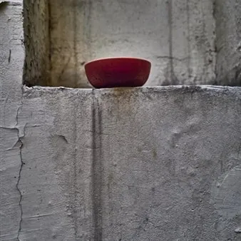

gio 22 ott · dalle 20:45
ERT FVG Stagione teatrale 2026-27: I Turcs tal Friùl
Di Pier Paolo Pasolini drammaturgia, regia, scene, luci e costumi di Alessandro Serra con Valerio Ameli, Aurora Cimino, Erika Cordisco, Salvo Drago, Diamara Ferrero, Noemi Grasso, Alessandro Maione, Chiara Michelini, Felice Montervino, Francesca Pica, Valerio Pietrovita, Mirko…
 Indicazioni
Indicazioni
- Costi e prenotazioni
- Costo non indicato · Prenotazione non indicata
- Programma
- Programma da verificare. Apri la fonte ufficiale per orari e possibili aggiornamenti.
- In caso di maltempo
- Nessuna indicazione specifica pubblicata.
- Note
- Acquisito automaticamente dalla fonte.
L’EVENTO
Descrizione completa
Di Pier Paolo Pasolini
drammaturgia, regia, scene, luci e costumi di Alessandro Serra con Valerio Ameli, Aurora Cimino, Erika Cordisco, Salvo Drago, Diamara Ferrero, Noemi Grasso, Alessandro Maione, Chiara Michelini, Felice Montervino, Francesca Pica, Valerio Pietrovita, Mirko Soldano, Aida Talliente Il contadino che parla il suo dialetto è padrone di tutta la sua realtà
P.P.P. I Turcs è una tragedia.
Per scriverla il giovane Pasolini si rifà alla più antica opera teatrale dell’occidente: I Persiani di Eschilo.
La compone in una lingua appresa da adulto, ascoltando i contadini, vocabolario alla mano.
Non è un testo fonetico ma poetico e perciò, in qualche modo, musicale.
Ogni nuova messa in scena ha il dovere di inventare una sonorità che si emancipi da un consolatorio vernacolare.
Pasolini vive i suoi vent’anni in un paese di fascisti occupato da nazisti: cosa fare?
Attendere pregando in chiesa o agire tra i boschi in montagna?
Deciderà di restare mentre suo fratello, più piccolo, andrà partigiano e dagli altri partigiani verrà ucciso.
Nei Turcs Pauli rimane, mentre il fratello minore, Meni, va in contro alla morte:
tornerà cadavere in una scena perfettamente tragica.
C’è la polis nei Turcs: la sacralità del paese riunito attorno alla chiesetta, succedaneo dell’altare di Dioniso posto al centro dell’orchestra.
C’è l’orrore dell’invasore che distrugge, violenta e rende schiavi.
C’è la musica nei Turcs, sacra e cattolica, presente in tutta l’opera. Ma è dal suo interno che si sprigionerà il canto ottomano del coro dei turchi a cui Pasolini dedica i versi più lirici.
C’è la contrapposizione religiosa ma soprattutto musicale fra una cultura cattolica della rassegnazione e la sacrosanta bestemmia di un popolo capace, il giorno dopo il terremoto, di numerare le pietre e cominciare a ricostruire.
La stessa bestemmia intonata da Meni a cui nel finale farà eco Pauli che, di fronte al cadavere del fratello, con l’ultimo fiato del suo povero petto cristiano, bestemmierà la Madonna.
Sarà questa Bestemmia a generare il vento spaventoso che fermerà i Turchi.
Al prete non resterà che dire: Amen . Alessandro Serra voci e canti: Bruno de Franceschi
assistente ai canti: Noemi Grasso
movimenti di scena: Chiara Michelini
collaborazione ai costumi: Francesca Novati
direttori di scena e macchinisti: Alberto Antonel e Luca Berettoni
tecnico del suono: Alessandro Orrù
datore luci: Francesco Peruzzi spettacolo in friulano con sovratitoli
IL PROGRAMMA
Programma e orari
Appuntamenti raccolti dalle fonti elencate. Dove manca un orario, non è ancora disponibile in questa scheda.
Programma pubblicato
- Dal 2026-10-22 al 2026-10-22
INFORMAZIONI UTILI
Prima di partire
- Controllare la fonte prima di partire.
ORGANIZZAZIONE